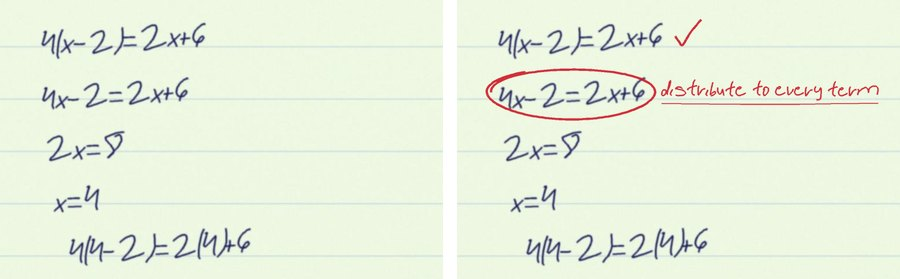

Snap your algebra.
Get it back marked.
RedPen finds the first line where your work breaks and circles it on your own page, like a teacher's red pen. It never writes the answer.

Try a sample
Sample pages are written with real human pen strokes (Google MathWriting). Their results are replays of a real model run, so they open instantly. Your own photo runs live.
How it decides
- Find linesClassical computer vision finds each written line on the photo.
- ReadA vision model copies each numbered line exactly — mistakes included.
- VerifyA symbolic maths engine (SymPy) checks every line against the one before. The model never decides what is right.
- MarkYour photo comes back with ticks, a circle on the first slip and a short hint in handwriting.
Finding your lines…
Line 2
is where it first breaks